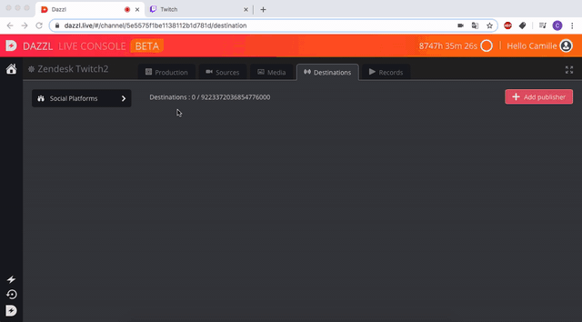

You can publish on many platforms, using the "RTMP" option.
We will see in this article how to publish on Twitter, Twitch, or any other platform using an RTMP key.
Publish your Live on Twitter
Twitter uses their "Media Studio" to let you tweet live.
Login to your twitter account and follow the steps indicated by Twitter:
https://help.twitter.com/en/using-twitter/how-to-use-live-producer
This article from Twitter will allow you to get the RTMP URL and key needed to link your account to Dazzl.
Once you get the twitter RTMP key & URL, use it in the Dazzl platform. Click on the "Destinations" tab, then "add publisher", "Associate an account" and finally "RTMP".
Start you Live, you will then be able to launch the preview on MediaStudio and then go Live.
Publish your Live on Twitch
Start by logging in to your Dazzl and Twitch account.
Go to your twitch settings, click "Settings".
Select "Channel and video", and copy your key.
Go back to the Dazzl platform, click on "Destinations", "add a publisher" and then "RTMP".
Enter the name of your destination.
Paste the following URL: rtmp://live.twitch.tv/app/
And use your Twitch key.
Your live show will then be launched directly on your Twitch channel.

Publish your Live on you website
You can follow the same steps to publish on your website as for Twitter and Twitch.
Click on the "Destinations" tab, then "Add publisher" and "RTMP".
Then add a name to your destination, your RTMP URL and your key.